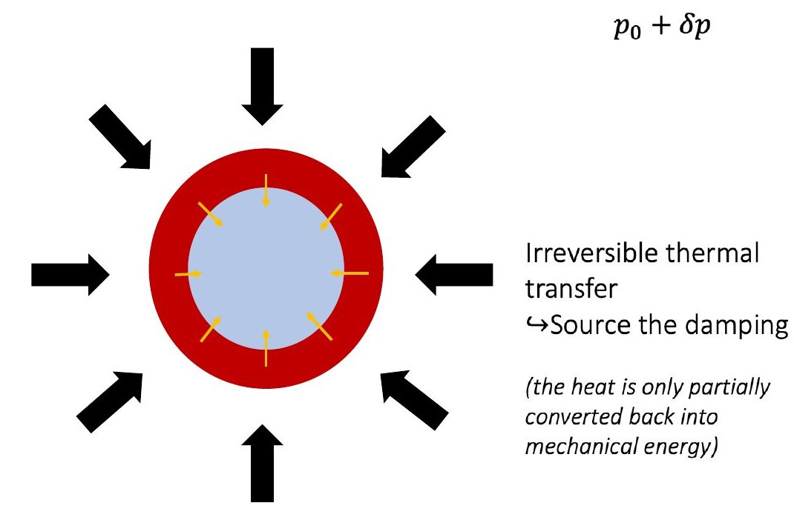
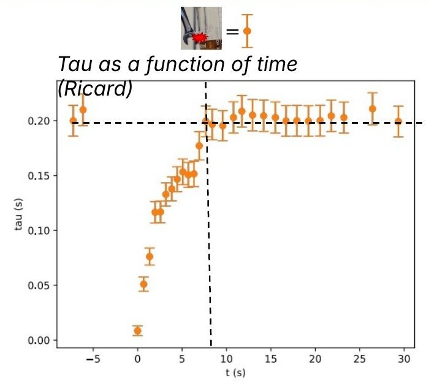
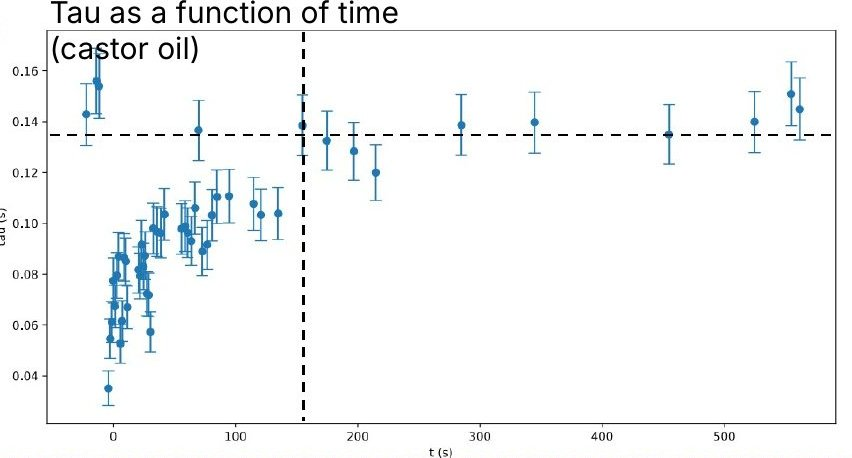

The questionSome distilleries in Brazil praise the quality of their spirit by the distinct sound the bottle makes when it is hit right after being quickly turned upside down. Investigate the phenomenon. Why does the effect not work with alcoholic carbonated drinks? What other liquids keep this “damping” effect for longer?
Tap a bottle of spirit and it rings. Turn it upside down and back, tap again, and the sound is quieter and dies out sooner. Physicists call this loss of sound damping. Our recordings also show a change of pitch.
To measure it, we clamped the bottle on a rotating axis, flipped it by hand against a stop, struck it with a wrench and recorded each tap with a microphone. For every tap we measured the ring time: how long the sound takes to fall to 5% of its starting level.
Flipping a bottle does several things at once. The liquid sloshes, wets the walls, and fills with tiny air bubbles. We changed one thing at a time. Blowing bubbles in with a straw, with little sloshing, still muffled the tap. Turning the bottle slowly, so that the liquid moves but no bubbles form, changed nothing. A nearly full bottle, with almost no free surface, was still muffled. Only the bubbles matter.
Sound on. Bubbles blown in through a straw. The taps after the bubbles appear are duller.
Sound on. A slow turn makes no bubbles, and the tap sounds the same afterwards.
The bottle rings at about 2900 vibrations per second. This sound squeezes and releases every bubble at the same rate. Squeezed gas heats up, but not evenly, so heat flows between the gas and the liquid around it. This heat is only partly turned back into motion, so a little sound energy is lost at every squeeze.
We used a published model of sound in bubbly liquids (Commander and Prosperetti, 1989) to compare three ways a bubble can drain sound energy: friction in the liquid (viscosity), this heat exchange, and sound re-emitted by the bubble. The heat exchange was by far the largest.

The bubbles in our drink (Ricard) are about 0.11 mm in size. Filming them close up, we measured them rising at 4.7 mm per second, with about 350 bubbles in each millilitre. Small bubbles rise at a steady speed set by their size and by how thick (viscous) the liquid is, so we could predict when the last ones leave: about 8 seconds.
We kept tapping the bottle after flipping it. The ring time dropped from about 0.2 s to about 0.01 s, then grew back and levelled off after 8 ± 2 s, as predicted.
Close-up view of the bubbles in Ricard (dark dots) thinning out as they rise.

Ring time of each tap against time since the flip (each dot is one tap). The dashed line marks where it levels off.
The same model says the effect lasts longer in a more viscous or less dense liquid, because the bubbles rise more slowly. In water and in ethanol it lasted at most 2 s, in sunflower oil 19 ± 2 s, and in very thick castor oil 160 ± 20 s. In water–ethanol mixtures it depends on the ethanol fraction, mainly through viscosity, which raises the question of whether the sound could serve as a quality test.
Beer behaves differently. Flipping it makes foam, and the ring time does not come back to its starting value, because the foam changes how the bottle itself rings. Adding gas to Ricard gave the same pattern as plain Ricard, so the gas is not the main problem. The foam comes from soap-like (amphiphilic) molecules that many carbonated alcoholic drinks contain.
